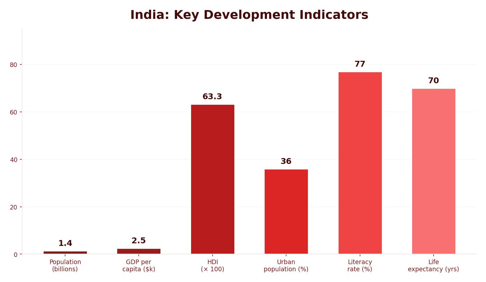

Where Is India?
India is located in South Asia, in the Northern Hemisphere. It borders the Indian Ocean to the south and shares borders with six countries: Pakistan, China, Nepal, Bhutan, Bangladesh and Myanmar. India covers approximately 3 million km², making it one of the largest countries in the world. Its central position within Asia and its extensive coastline make it a critical hub for international trade.
India is classified as a Newly Emerging Economy (NEE). It has shifted from a mainly agricultural society to a modern, rapidly growing economy, though this transformation happened later than in many HICs.
India is the fastest-growing major economy in the world and is projected to become the second-largest economy globally by 2050. Its strategic location connects European trade routes with the rest of Asia.

India’s Historical Context
India was a colony of the British Empire for nearly 200 years. In 1946, Britain announced it would allow India to gain independence, which formally happened in 1947. This event is known as the partition of India, which divided the subcontinent into three countries based largely on religion: India (Hindu majority), Pakistan (Muslim majority) and Bangladesh (initially East Pakistan).
The partition caused enormous upheaval. Not everyone lived in the “correct” area based on their religion, so millions of people were displaced. This led to widespread violence, conflict and tension between religious groups — a legacy that continues today, most notably in the disputed region of Kashmir, where fighting between India and Pakistan is still ongoing.
India’s Political System
India became a fully democratic state in 1950, with a system loosely based on the British model. Every five years, the people of India vote to elect their prime minister. Since 1950, India has had 19 prime ministers. The country’s democratic stability has been an important factor in its economic growth.
Why Is India Important?
India’s importance operates at three scales — national, regional and global:
- National — India has a vast population of around 1.4 billion people (it overtook China as the world’s most populous country in 2023). This provides an enormous workforce and marketplace that attracts TNCs.
- Regional — India’s central location in South Asia means it connects trade routes between Europe, Africa and East Asia. It has one of the largest coastlines in Asia, allowing ships carrying goods, medical supplies and food to access ports easily.
- Global — India is a nuclear power, a key player in world politics, a global IT hub, and home to Bollywood (one of the world’s largest film industries). It is projected to be the world’s second-largest economy by 2050.
The Indian Diaspora
The Indian diaspora is one of the largest in the world, with an estimated 34.5 million people of Indian origin living outside India across every continent except Antarctica. Indian communities have brought festivals like Diwali and Holi, rich cuisine and Bollywood films to international audiences. India also receives approximately $125 billion in remittances from workers in countries such as the UAE and the USA, which is a vital source of income that boosts the Indian economy.
India receives an estimated $125 billion in remittances each year from its diaspora of 34.5 million people abroad. This money supports families at home and contributes significantly to India’s economy.
India’s Population and Growth
India’s population has grown rapidly, rising from around 400 million in 1950 to over 1.4 billion today — an increase of 1 billion people in just 60 years. Several factors have driven this growth:
- Families traditionally wanted many children to work within the household and support elderly relatives.
- Limited family planning and lack of contraception kept birth rates high.
- Improving medical facilities and access to healthcare caused death rates to fall.
- The child death rate remained high in some areas, encouraging larger families as insurance.
India’s population is still growing, but the rate of growth is decreasing each year as the country develops. The median age is low compared to HICs, the urban population is increasing rapidly as former agricultural workers seek opportunities in cities, and migration out of the country remains high as people seek better opportunities in HICs.
Because India covers over 3 million km², it has several distinct climate zones. The north has mountainous and humid subtropical areas, including the Himalayas. The north-west contains the arid Thar Desert. The south and south-west have tropical wet climates with heavy monsoon rainfall. Mumbai, for example, receives 1,304 mm of rain per year (mostly during the monsoon months), while New Delhi in the north receives only 536 mm. These monsoon rains can cause severe flooding, a challenge India regularly faces.
India is home to many religions, including Hinduism (the majority), Islam, Sikhism, Christianity and Buddhism. The legacy of partition means that tension between Hindu and Muslim communities persists. This is most visible in the disputed region of Kashmir, where India and Pakistan both claim territory and military conflict continues. Religious diversity is one of India’s strengths culturally, but it also presents challenges for social cohesion.